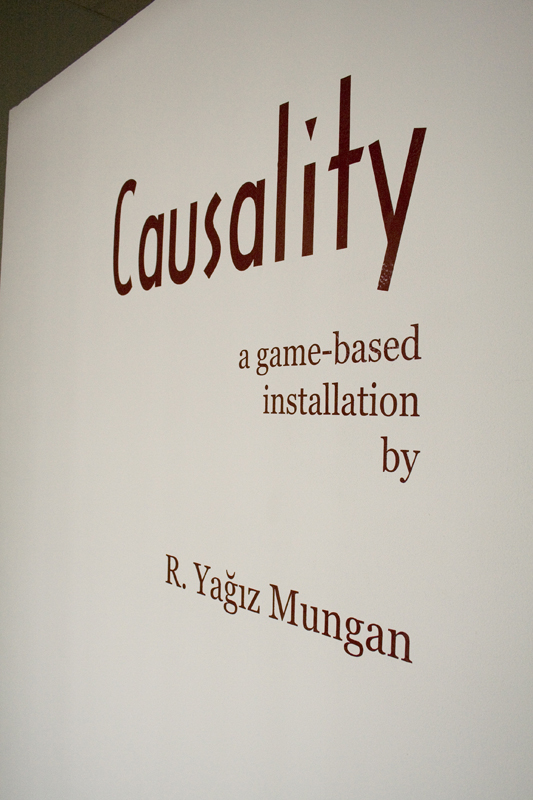
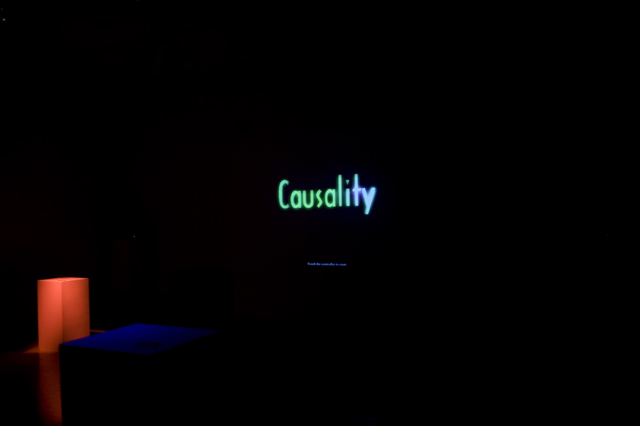
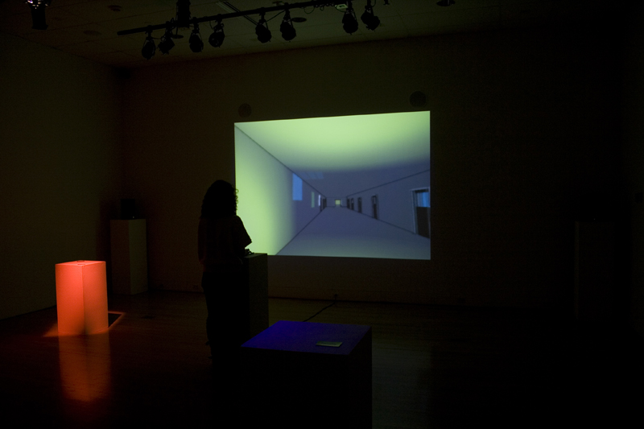
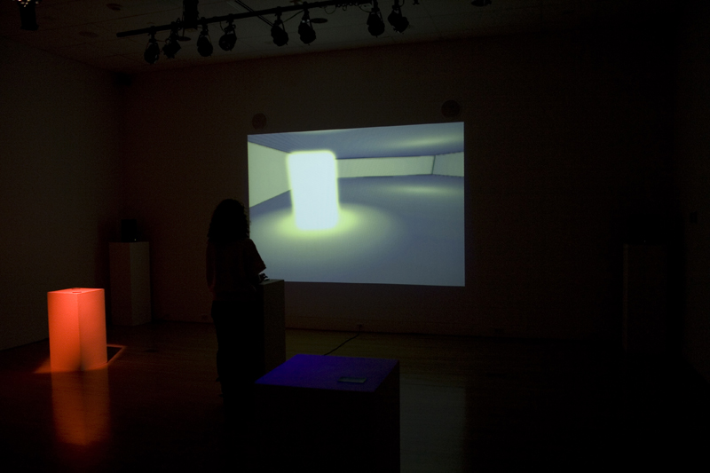

Causality is a game-based installation that presents the audience a slice of life in which they need to make critical choices. By going through a world of abstract sounds and a story framework, the audience is invited to perform, play and enjoy a unique, sound-driven audiovisual experience about hearing, decision making and the visual culture.
The world of Causality is created such that only the things that one can hear does exist and are visible. This puts the audience in a position to make the choices based on sound. From the narrative framework, created with the abstract sounds, each person creates his or her own sound story like a composer. The details of the story are defined with the combination of audience’s imagination and gameplay. In the end, the performances are saved as audio files within the system.
With the game mechanics, Causality encourages the audience to use their hearing actively, and depend less on the visuals thus bringing attention to the visual culture that we have today. Finally, Causality is also the first implementation of a research that investigates the idea of games as musical instruments that can be used for creative expression.
Here is a video description of Causality:
Causality Description from Yagiz Mungan on Vimeo.
You can find an early teaser for Causality here.
During the installation, the audio performances of the audience have been anonymously recorded and here is some samples of the created abstract sound-stories:
Here is a playthrough video from Causality:
Causality playthrough from Yagiz Mungan on Vimeo.
Here are some images from the installation:




